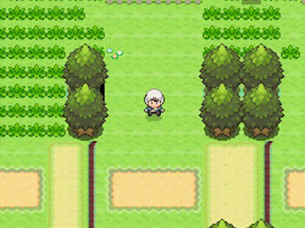

Game Features:
A bw style season system will make the game even more realistic, together with nature background sounds!
-> From October 21st on, Trees will start to turn brown, and sinnohian people will decorate the region for Halloween!
-> From December 21st on, snow will get accumulated on roofs and grass as plants get pale. Winter is coming!
-> From March 21st on, Trees will start to grow flowers, and spring will explode into life
-> From June 21st on, warm temperatures arrive at sinnoh and the grass thets dry.
-> From March 21st on, Trees will start to grow flowers, and spring will explode into life
-> From June 21st on, warm temperatures arrive at sinnoh and the grass thets dry.

The famous poketch is now back to stay. Moreover, new functions are added and place an important role in the story, such as the xTransceiver.
Dawn will be the one in charge of giving you the poketch this time. It will be very useful during your adventure, since you will oftenly make use of it in order to progress.
Apps:
-> Clock
-> Xtransceiver
-> Map
-> Pedometer
-> Dot artist app